tidyfun
The goal of tidyfun is to provide accessible and well-documented software that makes functional data analysis in R easy, specifically:
data wrangling and exploratory analysis.
tidyfun provides:
new data types for representing functional data: tfd & tfb
arithmetic operators, descriptive statistics and graphics functions for such data
tidyverse-verbs for handling functional data inside data frames.
tf-Class: Definitiontf-classtf is a new data type for (vectors of) functional data:
tfd, also irregular or sparsetfb
basically, a list of numeric vectors
(… since lists work well as columns of data frames …)
S3 based
Some example data used in this vignette (the code used to create these will be explained later) –
a prepped version of the refund::DTI dataset with 2 functional covariates:
dti = with(refund::DTI,
data.frame(id = ID, sex = sex,
case = factor(ifelse(case, "MS", "control")))) %>% as.tbl %>%
mutate(cca = tfd(DTI$cca, seq(0,1, l = 93), signif = 2) %>%
tfd(arg = seq(0,1,l = 93)),
rcst = tfd(DTI$rcst, seq(0, 1, l = 55), signif = 3))
dti
## # A tibble: 382 x 5
## id sex case cca rcst
## <dbl> <fct> <fct> <S3: tfd_reg> <S3: tfd_irreg>
## 1 1001 female contr… 1001_1: (0.000,0.49);(0.… 1001_1: (0.000,0.26);(0.…
## 2 1002 female contr… 1002_1: (0.000,0.47);(0.… 1002_1: ( 0.22,0.44);( 0…
## 3 1003 male contr… 1003_1: (0.000,0.50);(0.… 1003_1: ( 0.22,0.42);( 0…
## 4 1004 male contr… 1004_1: (0.000,0.40);(0.… 1004_1: (0.000,0.51);(0.…
## 5 1005 male contr… 1005_1: (0.000,0.40);(0.… 1005_1: ( 0.22,0.40);( 0…
## 6 1006 male contr… 1006_1: (0.000,0.45);(0.… 1006_1: (0.056,0.47);(0.…
## 7 1007 male contr… 1007_1: (0.000,0.55);(0.… 1007_1: (0.000,0.52);(0.…
## 8 1008 male contr… 1008_1: (0.000,0.45);(0.… 1008_1: (0.000,0.33);(0.…
## 9 1009 male contr… 1009_1: (0.000,0.50);(0.… 1009_1: (0.000,0.57);(0.…
## 10 1010 male contr… 1010_1: (0.000,0.46);(0.… 1010_1: ( 0.22,0.44);( 0…
## # ... with 372 more rowsand a simple 5 element vector of functions on a regular grid:
ex_data = dti$cca[1:5, seq(0, 1, l = 93), interpolate = TRUE]
rownames(ex_data) = LETTERS[1:5]
ex = tfd(ex_data, signif = 2)
ex
## tfd[5] on (0,1) based on 93 evaluations each
## interpolation by tf_approx_linear
## A: (0.000,0.49);(0.011,0.52);(0.022,0.54); ...
## B: (0.000,0.47);(0.011,0.49);(0.022,0.50); ...
## C: (0.000,0.50);(0.011,0.51);(0.022,0.54); ...
## D: (0.000,0.40);(0.011,0.42);(0.022,0.44); ...
## E: (0.000,0.40);(0.011,0.41);(0.022,0.40); ...plot(ex, xlim = c(-0.15, 1), col = pal_5)
text(x = -.1, y = ex[,0.07], labels = names(ex), col = pal_5)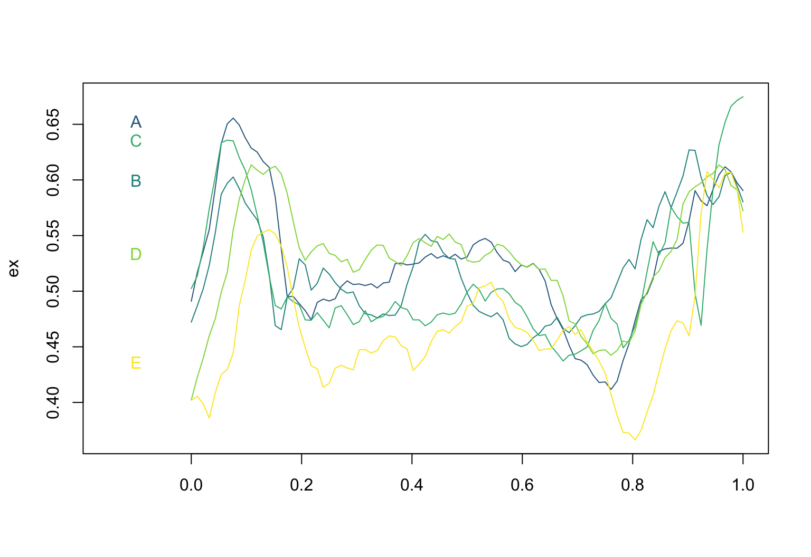
tf subclass: tfd
tfd objects contain “raw” functional data:
evaluations \(f_i(t)|_{t=t'}\) and corresponding argument vector(s) \(t'\)
domain: the range of valid args.ex %>% tf_evaluations() %>% str
## List of 5
## $ : num [1:93] 0.491 0.517 0.536 0.555 0.593 ...
## $ : num [1:93] 0.472 0.487 0.502 0.523 0.552 ...
## $ : num [1:93] 0.502 0.514 0.539 0.574 0.603 ...
## $ : num [1:93] 0.402 0.423 0.44 0.46 0.475 ...
## $ : num [1:93] 0.402 0.406 0.399 0.386 0.409 ...
ex %>% tf_arg() %>% str
## num [1:93] 0 0.0109 0.0217 0.0326 0.0435 ...
ex %>% tf_domain()
## [1] 0 1tfd-vector contains an evaluator function that defines how to inter-/extrapolate evaluations between args (and remembers results of previous calls)tf_evaluator(ex) %>% str
## function (x, arg, evaluations)
## - attr(*, "memoised")= logi TRUE
## - attr(*, "class")= chr [1:2] "memoised" "function"
tf_evaluator(ex) = "tf_approx_spline"tfd has subclasses for regular data with a common grid and irregular or sparse data, like the rcst measurements in our dti data.dti$rcst[1:2]
## tfd[2] on (0,1) based on 43 to 55 (mean: 49) evaluations each
## inter-/extrapolation by tf_approx_linear
## 1001_1: (0.000,0.26);(0.019,0.45);(0.037,0.40); ...
## 1002_1: ( 0.22,0.44);( 0.24,0.48);( 0.26,0.48); ...
dti$rcst[1:2] %>% tf_arg() %>% str
## List of 2
## $ 1001_1: num [1:55] 0 0.0185 0.037 0.0556 0.0741 ...
## $ 1002_1: num [1:43] 0.222 0.241 0.259 0.278 0.296 ...
dti$rcst[1:2] %>% plot(pch = "x", col = viridis(2))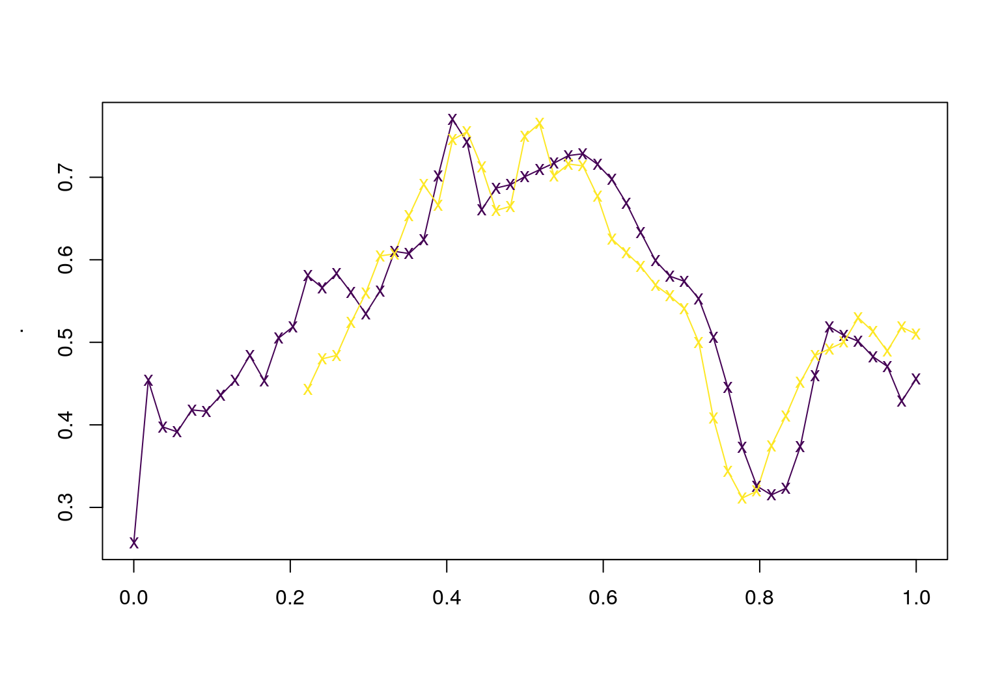
tf subclass: tfb
Functional data in basis representation:
coefficients and a common basis_matrix of basis function evaluations on a vector of arg-values.basis function that defines how to compute the basis for new args and how to differentiate or integrate it.mgcv-spline bases and FPCs (wavelets to be added)refund::DTI$cca %>% object.size() %>% print(units = "Kb")
## 304 Kb
dti$cca %>% object.size() %>% print(units = "Kb")
## 333.6 Kb
dti$cca %>% tfb(verbose = FALSE) %>% object.size() %>% print(units = "Kb")
## 148.9 Kbtfb spline basismgcv’s s()-syntaxex_b = ex %>% tfb()
## Percentage of raw input data variance preserved in basis representation:
## (per functional observation, tf_approx.):
## Min. 1st Qu. Median Mean 3rd Qu. Max.
## 95.60 96.40 96.90 97.12 98.00 98.70
ex_b[1:2]
## tf[2] on (0,1) in basis representation:
## using basis s(arg, bs = "cr", k = 25)
## A: (0.000,0.49);(0.011,0.52);(0.022,0.54); ...
## B: (0.000,0.47);(0.011,0.49);(0.022,0.51); ...
ex[1:2] %>% tfb(bs = "tp", k = 55)
## Percentage of raw input data variance preserved in basis representation:
## (per functional observation, tf_approx.):
## Min. 1st Qu. Median Mean 3rd Qu. Max.
## 99.10 99.22 99.35 99.35 99.47 99.60
## tf[2] on (0,1) in basis representation:
## using basis s(arg, bs = "tp", k = 55)
## A: (0.000,0.49);(0.011,0.52);(0.022,0.54); ...
## B: (0.000,0.47);(0.011,0.49);(0.022,0.50); ...layout(t(1:2))
ex %>% plot()
ex_b %>% plot(col = "red")
ex %>% tfb(k = 35, penalized = FALSE) %>% lines(col = "blue")
## Percentage of raw input data variance preserved in basis representation:
## (per functional observation, tf_approx.):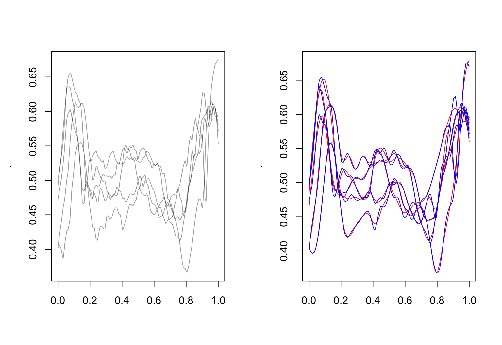
## Min. 1st Qu. Median Mean 3rd Qu. Max.
## 98.5 98.6 98.7 99.0 99.6 99.6tfb FPC-basedsmooth = FALSE”)refund::fpca.sc
tfd-object(ex_fpc = ex %>% tfb_fpc(smooth = FALSE, pve = .999))
## tfb[5] on (0,1) in basis representation:
## using basis FPC: 4 components.
## A: (0.000,0.49);(0.011,0.52);(0.022,0.54); ...
## B: (0.000,0.47);(0.011,0.49);(0.022,0.50); ...
## C: (0.000,0.50);(0.011,0.51);(0.022,0.54); ...
## D: (0.000,0.40);(0.011,0.42);(0.022,0.44); ...
## E: (0.000,0.40);(0.011,0.41);(0.022,0.40); ...
(ex_fpc_smooth = ex %>% tfb_fpc(pve = .95))
## tfb[5] on (0,1) in basis representation:
## using basis FPC: 19 components.
## A: (0.000,0.49);(0.011,0.51);(0.022,0.54); ...
## B: (0.000,0.46);(0.011,0.49);(0.022,0.51); ...
## C: (0.000,0.50);(0.011,0.52);(0.022,0.55); ...
## D: (0.000,0.40);(0.011,0.43);(0.022,0.45); ...
## E: (0.000, 0.4);(0.011, 0.4);(0.022, 0.4); ...layout(t(1:2))
ex %>% plot()
ex_fpc %>% plot(col = "red", ylab = "tfb_fpc(ex)")
ex_fpc_smooth %>% lines(col = "blue")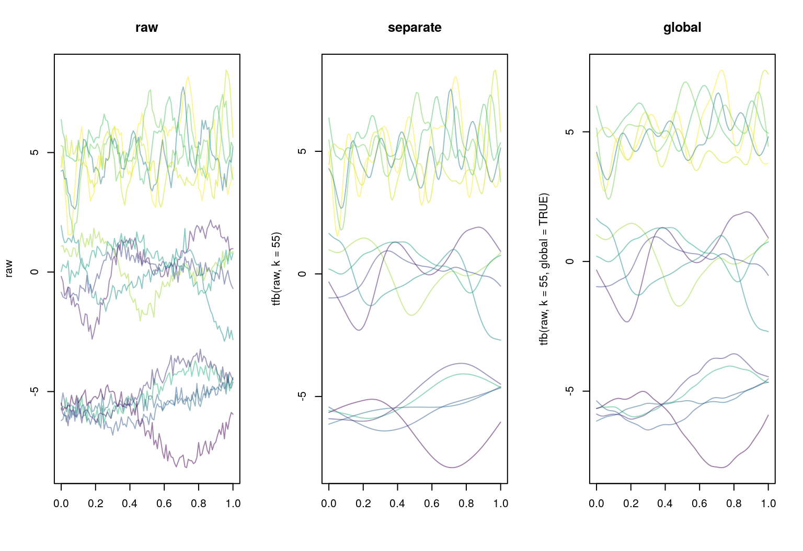
tf-Class: Methodstidyfun implements almost all types of operations that are available for conventional numerical or logical vectors for tf-vectors as well, so you can:
ex[1:2]
## tfd[2] on (0,1) based on 93 evaluations each
## interpolation by tf_approx_spline
## A: (0.000,0.49);(0.011,0.52);(0.022,0.54); ...
## B: (0.000,0.47);(0.011,0.49);(0.022,0.50); ...
ex[1:2] = ex[2:1]
ex
## tfd[5] on (0,1) based on 93 evaluations each
## interpolation by tf_approx_spline
## B: (0.000,0.47);(0.011,0.49);(0.022,0.50); ...
## A: (0.000,0.49);(0.011,0.52);(0.022,0.54); ...
## C: (0.000,0.50);(0.011,0.51);(0.022,0.54); ...
## D: (0.000,0.40);(0.011,0.42);(0.022,0.44); ...
## E: (0.000,0.40);(0.011,0.41);(0.022,0.40); ...ex[1] + ex[1] == 2 * ex[1]
## [1] TRUE
log(exp(ex[2])) == ex[2]
## [1] TRUE
ex - (2:-2) != ex
## [1] TRUE TRUE FALSE TRUE TRUEc(mean = mean(ex), sd = sd(ex))
## tfd[2] on (0,1) based on 93 evaluations each
## interpolation by tf_approx_spline
## mean: (0.000, 0.45);(0.011, 0.47);(0.022, 0.48); ...
## sd: (0.000,0.049);(0.011,0.052);(0.022,0.062); ...
tf_depth(ex) ## Modified Band-2 Depth (à la Sun/Genton/Nychka, 2012), others to come.
## B A C D E
## 0.6108696 0.6467391 0.6597826 0.5728261 0.5097826
median(ex) == ex[which.max(tf_depth(ex))]
## C
## TRUEIn addition, tidyfun provides methods specific for functional data:
tf-objects have a special [-operator: Its second argument specifies argument values at which to evaluate the functions and has some additional options, so it’s easy to get point values for tf objects:
ex[1:2, seq(0, 1, l = 3)]
## 0 0.5 1
## B 0.4721627 0.4984125 0.5802742
## A 0.4909345 0.5307563 0.5904773
## attr(,"arg")
## [1] 0.0 0.5 1.0
ex["B", seq(0, .15, l = 3), interpolate = FALSE]
## 0 0.075 0.15
## B 0.4721627 NA NA
## attr(,"arg")
## [1] 0.000 0.075 0.150
ex[1:2, seq(0, 1, l = 7), matrix = FALSE] %>% str
## List of 2
## $ B:Classes 'tbl_df', 'tbl' and 'data.frame': 7 obs. of 2 variables:
## ..$ arg : num [1:7] 0 0.167 0.333 0.5 0.667 ...
## ..$ value: num [1:7] 0.472 0.475 0.476 0.498 0.475 ...
## $ A:Classes 'tbl_df', 'tbl' and 'data.frame': 7 obs. of 2 variables:
## ..$ arg : num [1:7] 0 0.167 0.333 0.5 0.667 ...
## ..$ value: num [1:7] 0.491 0.521 0.504 0.531 0.472 ...layout(t(1:3))
ex %>% plot(alpha = .2, ylab = "lowess")
ex %>% tf_smooth("lowess") %>% lines(col = pal_5)
## using f = 0.15 as smoother span for lowess
ex %>% plot(alpha = .2, ylab = "rolling median (k=5)")
ex %>% tf_smooth("rollmedian", k = 5) %>% lines(col = pal_5)
## Warning in tf_smooth.tfd(., "rollmedian", k = 5): non-equidistant arg-
## values in '.' ignored by rollmedian.
## setting fill = 'extend' for start/end values.
ex %>% plot(alpha = .2, ylab = "Savitzky-Golay (quartic, 11 steps)")
ex %>% tf_smooth("savgol", fl = 11) %>% lines(col = pal_5)
## Warning in tf_smooth.tfd(., "savgol", fl = 11): non-equidistant arg-values
## in '.' ignored by savgol.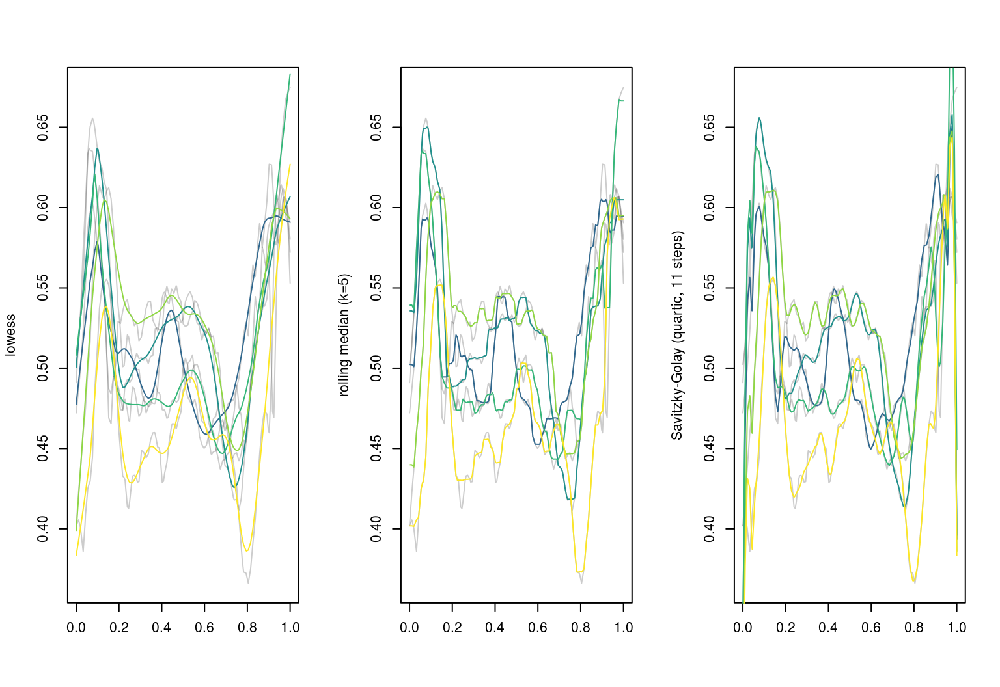
layout(t(1:3))
ex %>% plot(col = pal_5)
ex %>% tf_smooth() %>% tf_derive() %>% plot(col = pal_5, ylab = "tf_derive(tf_smooth(ex))")
## using f = 0.15 as smoother span for lowess
ex %>% tf_integrate(definite = FALSE) %>% plot(col = pal_5)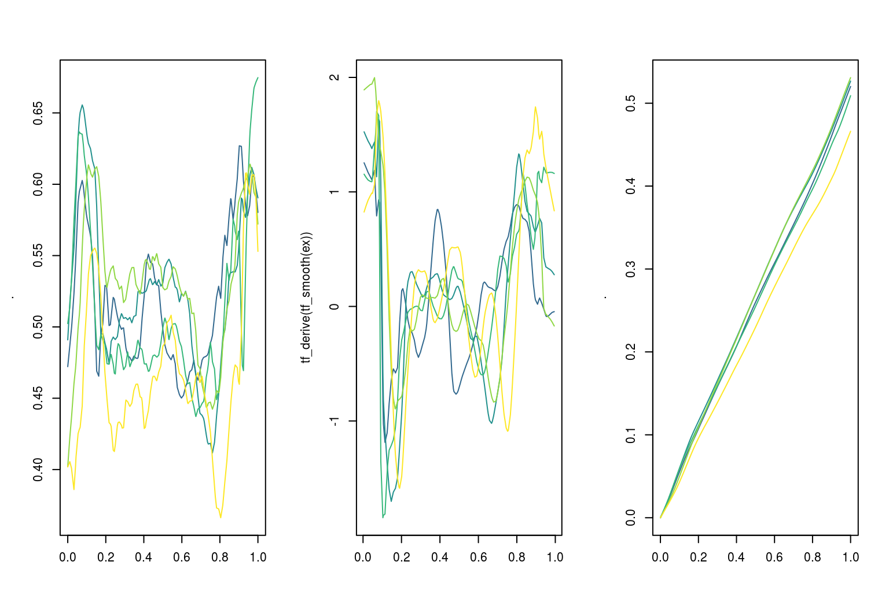
ex %>% tf_integrate()
## B A C D E
## 0.5202229 0.5266713 0.5090638 0.5308612 0.4661378tidyfun makes it easy to find (ranges of) arguments \(t\) satisfying a condition on value \(f(t)\) (and argument \(t\)):
ex %>% tf_anywhere(value > .65)
## B A C D E
## FALSE TRUE TRUE FALSE FALSE
ex[1:2] %>% tf_where(value > .6, "all")
## $B
## [1] 0.07608696 0.89130435 0.90217391 0.91304348 0.92391304 0.96739130
## [7] 0.97826087
##
## $A
## [1] 0.05434783 0.06521739 0.07608696 0.08695652 0.09782609 0.10869565
## [7] 0.11956522 0.13043478 0.14130435 0.95652174 0.96739130 0.97826087
ex[2] %>% tf_where(value > .6, "range")
## begin end
## A 0.05434783 0.9782609
ex %>% tf_where(value > .6 & arg > .5, "first")
## B A C D E
## 0.8913043 0.9565217 0.9565217 0.9347826 0.9347826ex %>% plot(xlim = c(-0.15, 1), col = pal_5, lwd = 2)
text(x = -.1, y = ex[,0.07], labels = names(ex), col = pal_5, cex = 1.5)
median(ex) %>% lines(col = pal_5[3], lwd = 4)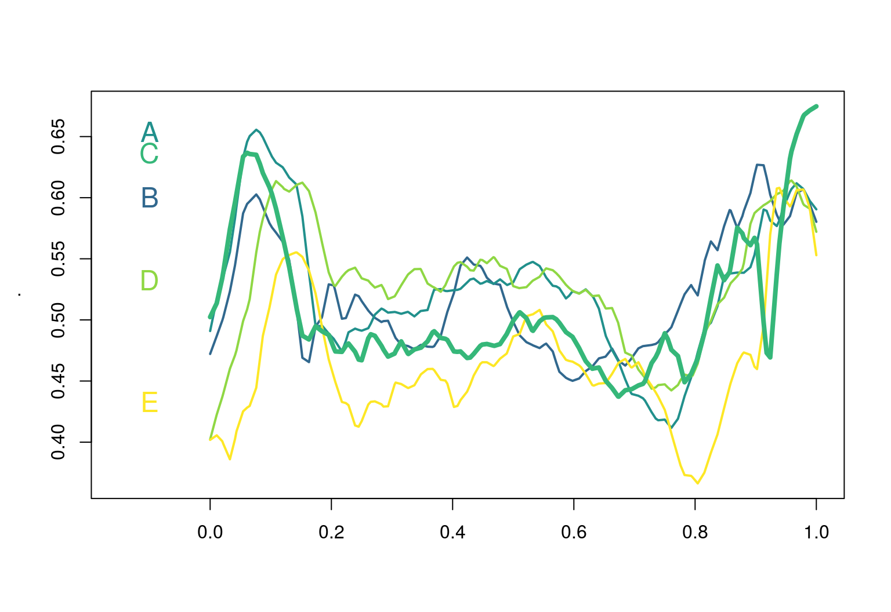
ex %>% tf_where(value == max(value), "first")
## B A C D E
## 0.90217391 0.07608696 1.00000000 0.10869565 0.93478261
ex[c("A", "D")] %>% tf_zoom(.5, 1) %>% tf_where(value == max(value), "first")
## A D
## 0.9673913 0.9565217
ex %>% tf_zoom(0.2, 0.6) %>% tf_anywhere(value <= median(ex)[, arg])
## B A C D E
## TRUE FALSE TRUE FALSE TRUETo & from list, matrix or data frame with "id","arg","value"-columns:
ex_matrix = ex %>% as.matrix(); ex_matrix[1:2, 1:3]
## 0 0.0108695652173913 0.0217391304347826
## B 0.4721627 0.4868219 0.5022577
## A 0.4909345 0.5168018 0.5356539
ex_df = ex %>% as.data.frame(); str(ex_df)
## Classes 'tbl_df', 'tbl' and 'data.frame': 465 obs. of 3 variables:
## $ id : Ord.factor w/ 5 levels "B"<"A"<"C"<"D"<..: 1 1 1 1 1 1 1 1 1 1 ...
## $ arg : num 0 0.0109 0.0217 0.0326 0.0435 ...
## $ value: num 0.472 0.487 0.502 0.523 0.552 ...
ex_matrix[1:2, ] %>% tfd()
## tfd[2] on (0,1) based on 93 evaluations each
## interpolation by tf_approx_linear
## B: (0.000,0.47);(0.011,0.49);(0.022,0.50); ...
## A: (0.000,0.49);(0.011,0.52);(0.022,0.54); ...
tfd(ex_df) == tfd(ex_matrix)
## B A C D E
## TRUE TRUE TRUE TRUE TRUEggplot2 graphicsbase graphicslayout(t(1:2))
plot(ex, type = "spaghetti"); lines(c(median(ex), mean(ex)), col = c(2, 4))
plot(ex, type = "lasagna", col = viridis(50))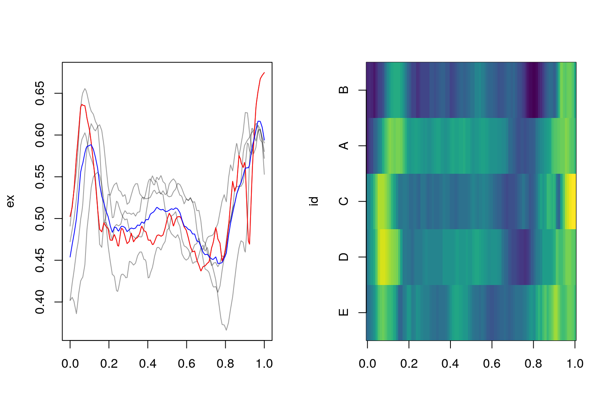
ggplot2
Pasta-themed geoms and plots with for functional data:
geom_spaghetti for linesgeom_meatballs for (lines &) pointsgglasagna with order-arguments to sort the lasagna layersgeom_capellini for little sparklines / glyphs on maps etc.To come:
geom_pappardelle for functional boxplotsggplot(dti) +
geom_spaghetti(aes(y = cca, col = case, alpha = .2 + .4*(case == "control"))) +
facet_wrap(~ sex) + scale_alpha(guide = 'none', range = c(.2, .4))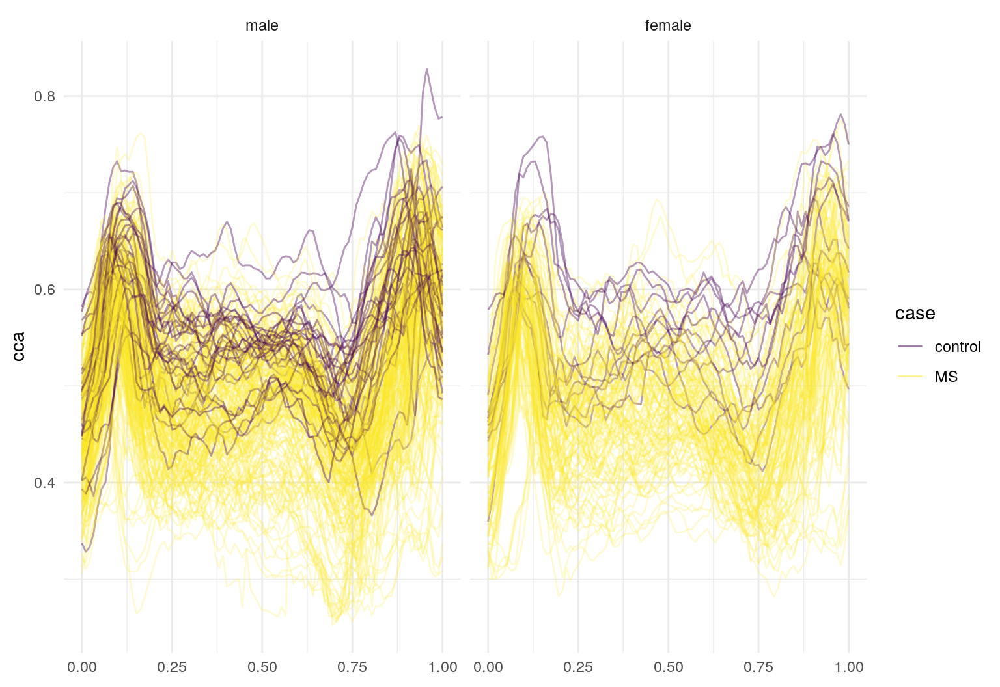
gglasagna(dti, cca,
order = tf_integrate(cca, definite = TRUE), arg = seq(0,1, l = 101)) +
theme(axis.text.y = element_text(size = 6)) +
facet_wrap(~ case, ncol = 2, scales = "free")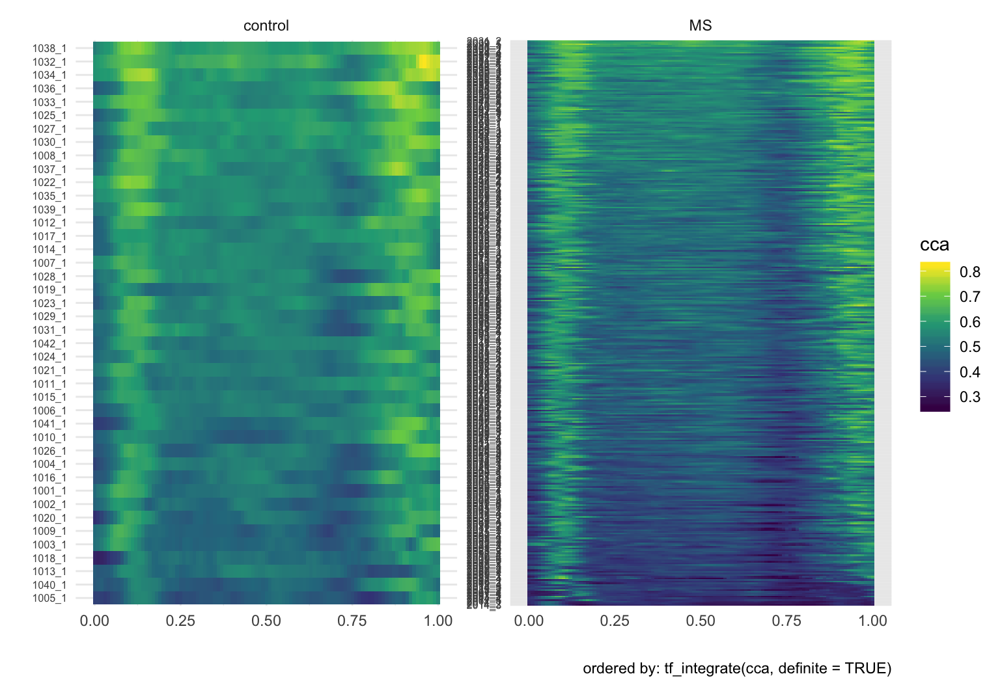
Some data prep for the iconic Canadian Weather data:
canada <- data.frame(
place = fda::CanadianWeather$place,
region = fda::CanadianWeather$region,
lat = fda::CanadianWeather$coordinates[,1],
lon = -fda::CanadianWeather$coordinates[,2],
region = fda::CanadianWeather$region)
canada$temp <- tfd(t(fda::CanadianWeather$dailyAv[,,1]), arg = 1:365)
canada$precipl10 <- tfd(t(fda::CanadianWeather$dailyAv[,,3]), arg = 1:365) %>%
tf_smooth
## using f = 0.15 as smoother span for lowess
canada_map <-
data.frame(maps::map("world", "Canada", plot = FALSE)[c("x", "y")]) Now plot a map of Canada with annual temperature averages in red, precipitation in blue:
ggplot(canada, aes(x = lon, y = lat)) +
geom_capellini(aes(tf = precipl10), width = 4, height = 5, colour = "blue",
line.linetype = 1) +
geom_capellini(aes(tf = temp), width = 4, height = 5, colour = "red",
line.linetype = 1) +
geom_path(data = canada_map, aes(x = x, y = y), alpha = .1) +
coord_quickmap()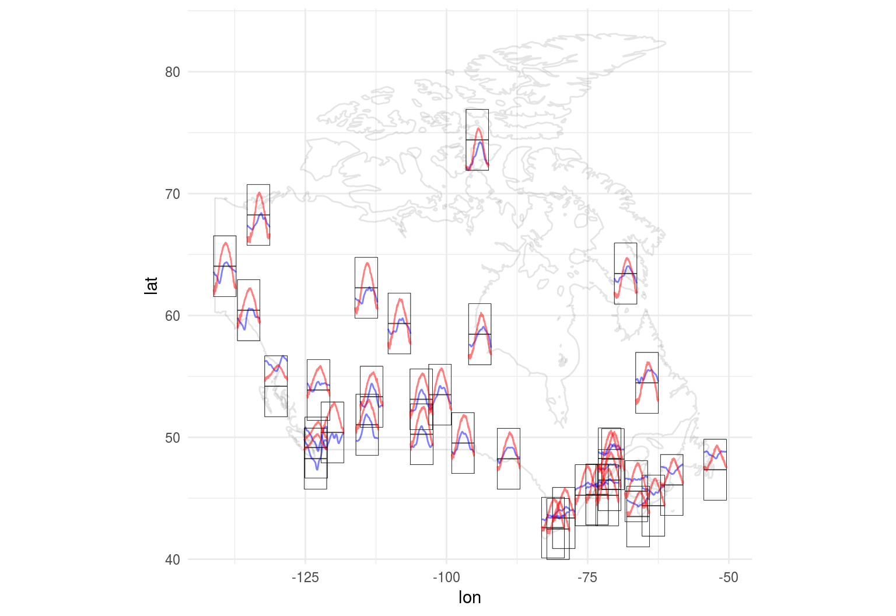
tf-objects inside data framesFor a more detailed discussion of the topic of this section, please see the Data Manipulation vignette.
tf-objects inside data frames: dplyr
dplyr verbs filter, select, mutate, summarize work on tf-columns - e.g.:
# group-wise functional means:
dti %>% group_by(case, sex) %>% summarize(mean_rcst = mean(rcst, na.rm = TRUE)) %>% ungroup
## # A tibble: 4 x 3
## case sex mean_rcst
## <fct> <fct> <S3: tfd_irreg>
## 1 control male [1]: (0.000,0.51);(0.019,0.50);(0.037,0.49); ...
## 2 control female [2]: (0.000,0.52);(0.019,0.53);(0.037,0.54); ...
## 3 MS male [3]: (0.000,0.53);(0.019,0.52);(0.037,0.50); ...
## 4 MS female [4]: (0.000,0.52);(0.019,0.52);(0.037,0.50); ...
# which subjects go below cca = .26:
dti %>% filter(tf_anywhere(cca, value < .26))
## # A tibble: 5 x 5
## id sex case cca rcst
## <dbl> <fct> <fct> <S3: tfd_reg> <S3: tfd_irreg>
## 1 2017 male MS [1]: (0.000,0.38);(0.011,0… [1]: (0.074,0.52);(0.093,…
## 2 2017 male MS [2]: (0.000,0.34);(0.011,0… [2]: (0.000,0.62);(0.019,…
## 3 2017 male MS [3]: (0.000,0.35);(0.011,0… [3]: (0.000,0.67);(0.019,…
## 4 2083 male MS [4]: (0.000,0.36);(0.011,0… [4]: (0.000,0.40);(0.019,…
## 5 2083 male MS [5]: (0.000,0.39);(0.011,0… [5]: (0.000,0.51);(0.019,…
# center & scale functional data:
dti %>%
mutate(cca = tfb(cca, verbose = FALSE),
cca_z = (cca - mean(cca))/sd(cca)) %>% glimpse
## Observations: 382
## Variables: 6
## $ id <dbl> 1001, 1002, 1003, 1004, 1005, 1006, 1007, 1008, 1009, 10...
## $ sex <fct> female, female, male, male, male, male, male, male, male...
## $ case <fct> control, control, control, control, control, control, co...
## $ cca <S3: tfb> 1001_1: (0.000,0.49);(0.011,0.52);(0.022,0.54); ...,...
## $ rcst <S3: tfd_irreg> 1001_1: (0.000,0.26);(0.019,0.45);(0.037,0.40)...
## $ cca_z <S3: tfb> [1]: (0.000, 0.85);(0.011, 0.98);(0.022, 1.09); ....tf-objects inside data frames: tidyr
tidyfun provides tf_ variants of tidyr-verbs to reshape and reformat functional data while keeping it in sync with other covariates:
tf_spread: tf \(\rightarrow\) columns for each arg
tf_gather: columns for each arg \(\rightarrow\) tf
# spread tf out into columns for each arg
dti_wide = dti %>% tf_spread(cca); dti_wide[, 1:7] %>% glimpse()
## Observations: 382
## Variables: 7
## $ id <dbl> 1001, 1002, 1003, 1004, 1005, 1006, 100...
## $ sex <fct> female, female, male, male, male, male,...
## $ case <fct> control, control, control, control, con...
## $ rcst <S3: tfd_irreg> 1001_1: (0.000,0.26);(0.019,0...
## $ cca_0 <dbl> 0.4909345, 0.4721627, 0.5023738, 0.4021...
## $ cca_0.0108695652173913 <dbl> 0.5168018, 0.4868219, 0.5136516, 0.4225...
## $ cca_0.0217391304347826 <dbl> 0.5356539, 0.5022577, 0.5392542, 0.4398...
# collect all columns into a single tf-column
# (... will try to guess arg from column names, name of tf from their prefix)
dti_wide %>% tf_gather(matches("cca_")) %>% glimpse()
## creating new tfd-column <cca>
## Observations: 382
## Variables: 5
## $ id <dbl> 1001, 1002, 1003, 1004, 1005, 1006, 1007, 1008, 1009, 101...
## $ sex <fct> female, female, male, male, male, male, male, male, male,...
## $ case <fct> control, control, control, control, control, control, con...
## $ rcst <S3: tfd_irreg> 1001_1: (0.000,0.26);(0.019,0.45);(0.037,0.40);...
## $ cca <S3: tfd_reg> [1]: (0.000,0.49);(0.011,0.52);(0.022,0.54); ...,...tf_unnest: tf \(\rightarrow\) data in long format (id, arg, value)tf_nest : data in long format (id, arg, value) \(\rightarrow\) tf
# unnest tf by writing 3 loong columns id, arg, value:
# (will try to avoid unnecessary duplication of columns)
dti_long = dti %>% tf_unnest(cca); dti_long %>% glimpse()
## Observations: 35,526
## Variables: 7
## $ id <dbl> 1001, 1001, 1001, 1001, 1001, 1001, 1001, 1001, 1001...
## $ sex <fct> female, female, female, female, female, female, fema...
## $ case <fct> control, control, control, control, control, control...
## $ rcst <S3: tfd_irreg> 1001_1: (0.000,0.26);(0.019,0.45);(0.037,0...
## $ cca_id <chr> "1001_1", "1001_1", "1001_1", "1001_1", "1001_1", "1...
## $ cca_arg <dbl> 0.00000000, 0.01086957, 0.02173913, 0.03260870, 0.04...
## $ cca_value <dbl> 0.4909345, 0.5168018, 0.5356539, 0.5553587, 0.592761...
# nest tf by writing 3 loong columns id, arg, value:
dti_long %>% tf_nest(cca_value, .id = cca_id, .arg = cca_arg) %>% glimpse()
## Observations: 382
## Variables: 6
## $ cca_id <chr> "1001_1", "1002_1", "1003_1", "1004_1", "1005_1", "1...
## $ id <dbl> 1001, 1002, 1003, 1004, 1005, 1006, 1007, 1008, 1009...
## $ sex <fct> female, female, male, male, male, male, male, male, ...
## $ case <fct> control, control, control, control, control, control...
## $ rcst <S3: tfd_irreg> [1]: (0.000,0.26);(0.019,0.45);(0.037,0.40...
## $ cca_value <S3: tfd_reg> 1001_1: (0.000,0.49);(0.011,0.52);(0.022,0.5...Note that left/right_join-operations as well as bind_rows do not currently work for tables with tfd or tfb-columns, see tidyfun/issues/53. bind_rows can be easily avoided by using rbind, which still works, instead.